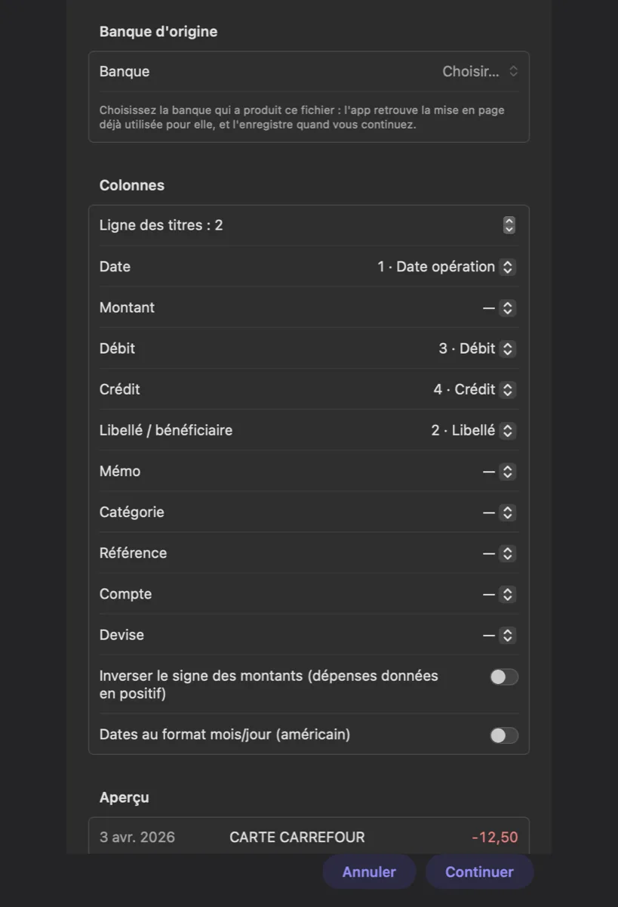

Import and export
Your statements, no third-party service.

Import your statements without a third-party service, fix what needs fixing, and undo an import in one gesture.
What's inside
- CSV assistant: recognised columns (date, amount or debit/credit, description…) can be corrected; the preview shows totals before importing.
- Fix row by row: untick, edit or skip a row before importing.
- Clean names: "CARTE CARREFOUR MARKET" becomes "Carrefour Market"; the bank's label stays in the memo.
- Suggested category: from your rules, your history, then a few well-known names.
- "To review" screen: after the import, check the suggested categories; your corrections are used for the next transactions with the same name.
- Duplicates: transactions already present are flagged and skipped.
- Current balance: for a statement without a balance, enter your bank's balance; the app deduces the opening balance.
- Statement order: on the same date, transactions keep the bank's order.
- PayPal activity: one payment per purchase, with its shop, in a PayPal account linked to your bank's PayPal lines.
- One batch, one tag: a tag finds what was just imported; the import can be undone entirely.
- Formats: CSV, OFX, QIF, MT940 and CAMT.053; XHB files and Actual Budget archives.
- Bank profiles: a bank's layout is remembered.
- Watched folder: drop your statements in a folder, the app imports them by itself, without duplicates.
- Export: CSV, QIF, JSON backup, PDF reports.